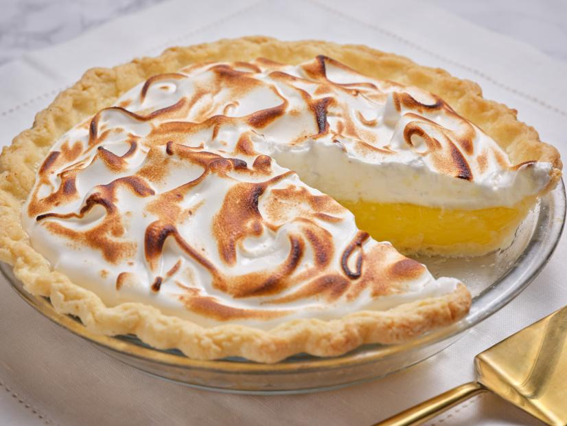

Grandma's Lemopn Meringue Pie

One 9-inch pie
30 minutes - prep time
10 minutes - Cook time
40 minutes - Total
8 Servings
INGREDIENTS
- 1 cup white sugar
- 2 tablespoons all-purpose flour
- 3 tablespoons cornstarch
- 1/4 teaspoons butter
- 1 1/2 cups water
- 2 lemon , juiced and zested
- 2 tablespoons butter
- 4 egg yolks , beaten
- 1 (9 inch) pie crust , baked
- 4 egg whites
- 6 tablespoons white sugar
DIRECTIONS
-
Preheat oven: Preheat oven to 350 degrees F (175 degrees C).
- Make Lemon Filing: In a medium saucpan....
- Whiosk together 1 cup sugar , flour , cornstarch , and sal.
- stir water , lemon juice and lemon zest.
- Cook over medium-high heat string frequently , until mixture comes to a boil.
- Stir in butter.
- Place eggs yolks in a small bowl and gradually whisk in 1/2 cup of hot sugar mixture.
- Bring to a boil and continue to cook while stirring constantly until thick.
- Remove from heat.
- Pour filling into baked pastry shell.
-
Make Meringue:In a large glass or metal bowl ...
- Whisp egg whites until foamy.
- Add sugar gradually and continue to whip until stiff peaks form.
- Spread meringue over pie , sealing the edge at the crust
-
Bake: Bake in preheated oven for 10 minutes , or until meringue is golden brown.
- Add powdered sugar, strawberry essence and mix.
- Add the flour mixture and mix.
- Correct the consistency by adding milk.
- Add walnuts and mix gently.
USER COMMENTS
This is a very fun recipe to follow , because Grandma makes it sweet and simple recipe to follow as it is sweet and simple. this pie is thickened with cornstars with cornstarch and flour in addition to egg yolks , and contains no milk.
Emilie S.
Q: What do you call an ape who loves pie ?
A: mernigue-utan
- Vickie K.
LINKS
Search for other lemon mernigue pie recipie
Home